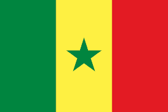

Nuestros Países Participantes 2026
| Zona / Sector | Países Participantes |
|---|---|
| Zona A (Norte) | España |
| Zona B (Oeste) | Alemania |
| Zona C (Este) | México |
| Zona D (Sur) | Senegal  Japón |
Haz clic en cada país para descubrir su oferta gastronómica y cultural.